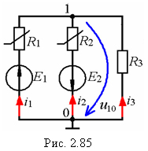
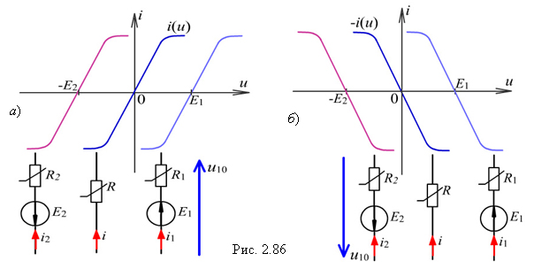
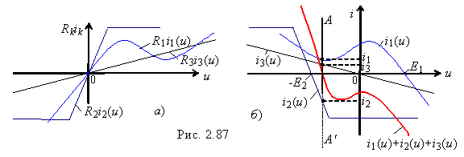

2.12.3.4. Расчёт нелинейной цепи с двумя узлами
|  | Для цепи с двумя узлами (рис. 2.85) токи ветвей можно определить графически, построив графики ВАХ i1(u), i2(u) и i3(u) ветвей на основании уравнений, записанных относительно узлового напряжения u10 = u: u10 = E1 - i1(u)R1; u10 = -E2 - i2(u)R2; u10 = -R3i3. При построении графиков ik(u) ветвей руководствуются следующими правилами: |
а) если ветвь наряду с резистивным двухполюсником, ВАХ i(u) которого проходит через начало координат (рис. 2.86, а), содержит источник напряжения с постоянной ЭДС, то ВАХ двухполюсника будет смещена на величину ЭДС E1 или Е2 по оси u вправо или влево (рис. 2.86, а) в зависимости от знака ЭДС в правой части уравнений; |
|
б) если в уравнениях ВАХ ik(u) k-й ветви (произведение Rkik(u)) имеет знак минус, то она строится в обратном направлении (рис. 2.86, б). |
|
С учётом этих правил, ВАХ R1i1(u), R2i2(u) двух нелинейных R1, R2 и ВАХ R3i3(u) линейного R3 элементов цепи (рис. 2.87, а) на рис. 2.87, б построены графики ВАХ i1(u), i2(u) и i3(u) ветвей схемы в зависимости от узлового напряжения u и знаков слагаемых в уравнениях. |
 |
Если токи в ветвях схемы направлены к узлу 1 (см. рис. 2.85), то решение системы уравнеий (нахождение токов ветвей) определяется точкой пересечения кривой ∑ ik(u) = i1(u) + i2(u) + i3(u), полученной суммированием ординат ВАХ ветвей при одном и том же узловом напряжении u10 = u , с осью напряжения. |
Через эту точку проводим прямую линию AA', ординаты точек пересечения которой ВАХ ветвей определяют значения токов i1, i2, i3. Ток i2 имеет направление, противоположное выбранному. |
 |
Если же токи в ветвях схемы по отношению к узлу 1 имеют различное направление, например i1 + i2 - i3 = 0, то решение определяется точкой пересечения кривой i1 + i2 с ВАХ ветви 3 , по которой протекает ток i3 . |
| |
||